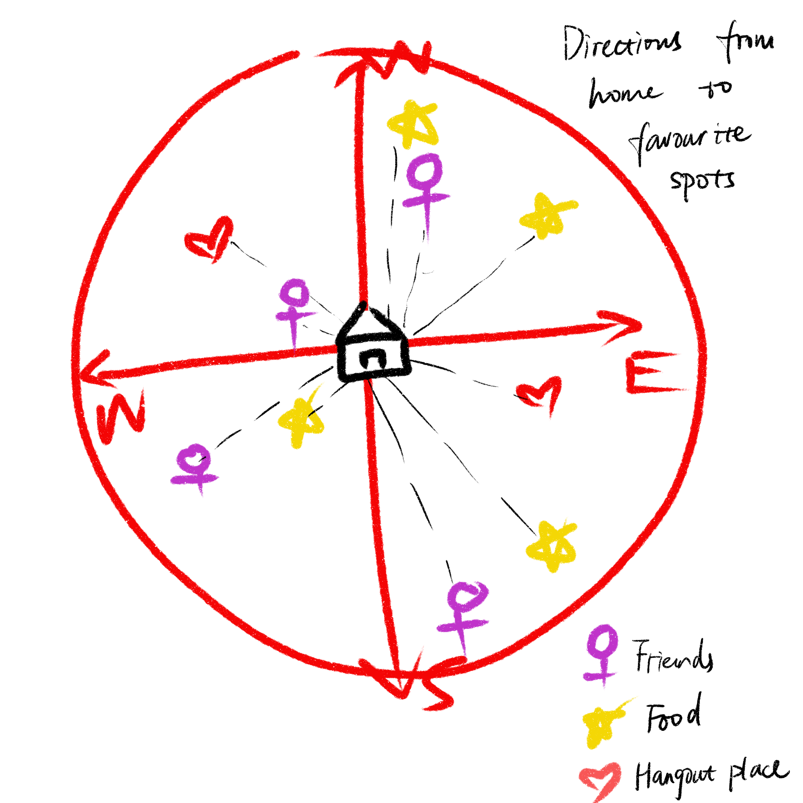

This is my public portfolio for the Telling Stories with Data class at CMU.
I'm an interdisciplinary UX designer and will graduate in August. I study under the Human-Computer Interaction Institute here. I am passionate about technology and entertainment and specialized in web design & development. Trying out new things is a common practice for me and I am always ready for a neew challenge. See one fun fact about me in the footer :)
Obviously, how to tell a story using data. But building on that, I'm also interested in how to apply my data visualization skills in my design as well as how to tell a story using not only data but also other evidence. At the same time, I want to get in touch with excellent people who share similar interests with me and enjoy this wonderful class together!
Here's where all of my data visualization will go.
Starting with the 1st sketch in class:
